语言模型基础
从字符拼出 token，再观察可见上下文、采样概率与 Transformer 块。
视觉与图文表征
把图像切成图块，比较注意力、卷积和池化怎样提取特征，最后用图文检索连接像素与描述。
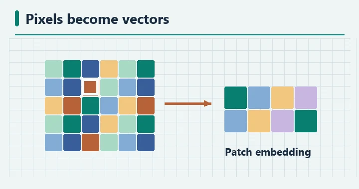
图像如何变成 token？
Patch Lens在同一张图上切换颜色和纹理投影，寻找一个图块的最近邻。
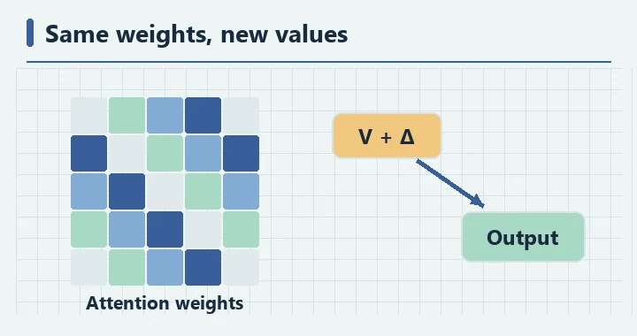
注意力不变，输出会变吗？
Self-attention沿用所选图块，只改一个 V 分量，核对它对输出的贡献。
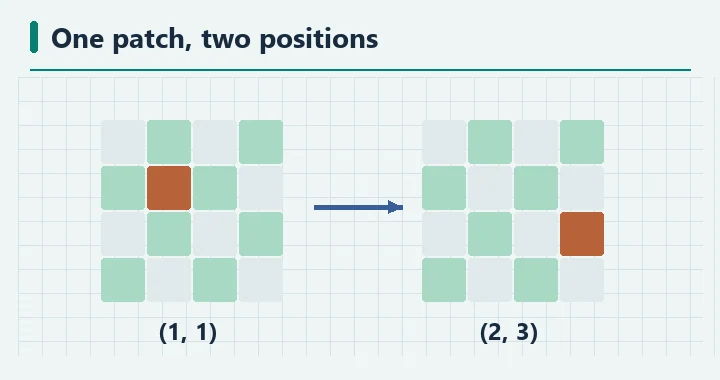
把图块搬走，它会知道吗？
二维位置编码同一个查询跟着图块移动，比较有无坐标时的注意力输出。
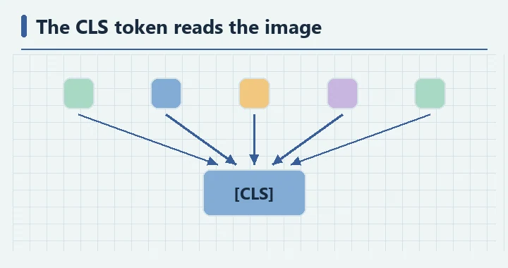
一个 [CLS] 怎样读完整张图？
Vision Transformer用语言课的同一个块处理图块，移除一个图块并比较整图读数。
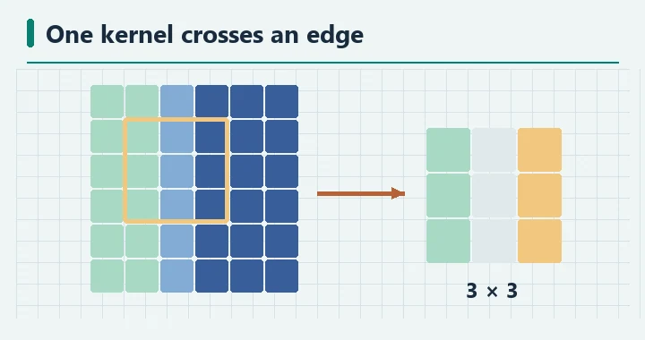
同一条边缘，旋转卷积核会怎样？
卷积与边缘改从局部窗口读位置，逐格编辑像素、核对九次乘法。
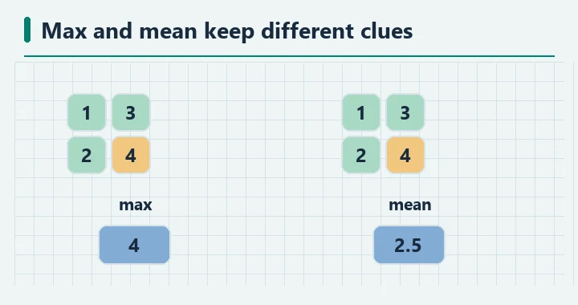
边缘平移一格，压缩后的特征还一样吗？
池化与平移移动上一课的图像，比较最大池化与平均池化保留的局部信息。
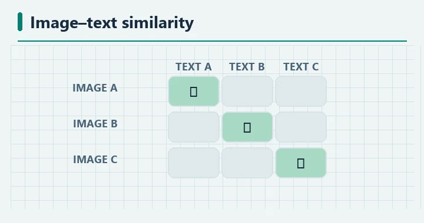
像素怎么和一句话配对？
图文检索让四条描述竞争同一张图，错配训练标签，观察排名怎样改变。
监督学习与泛化
给样本加上标签，比较梯度、批量、样本难度顺序和新样本表现。
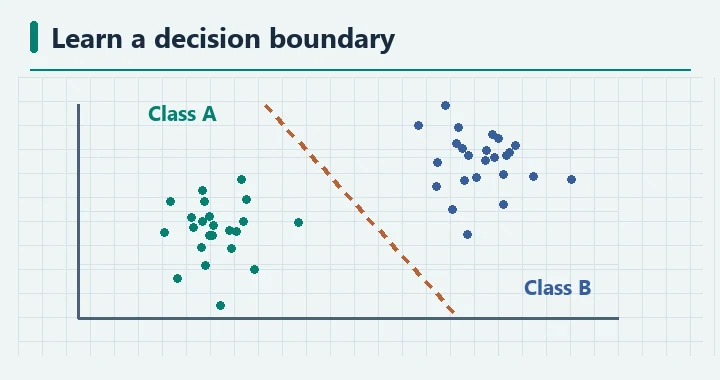
换掉一个标签，模型会学到什么？
监督学习固定样本和训练预算，翻转一个标签，比较分类概率与交叉熵。
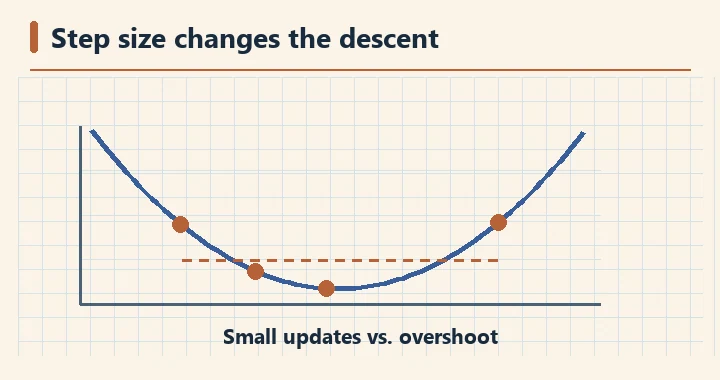
梯度算对了，为什么越学越差？
反向传播沿计算图追踪误差，比较三个学习率带来的训练轨迹。
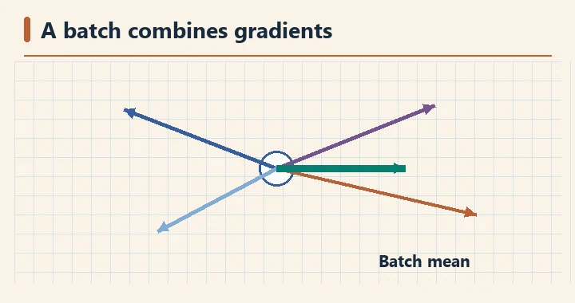
四个样本，为什么会把权重往两边拉？
小批量梯度从上一课的权重起步，改变批量和顺序，比较每次更新与整组损失。
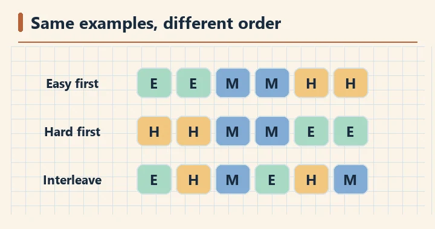
同一套题，先易后难会学得更好吗？
课程学习在相同样本数下比较先易、先难和交错三种训练顺序。
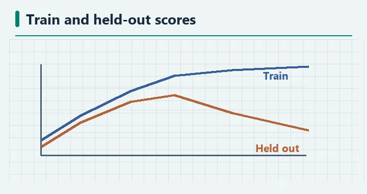
训练题全答对，新题也能答对吗？
泛化与过拟合改变邻居数，核对一张错标签怎样影响训练成绩和留出成绩。
分类评估与决策阈值
先挑一个操作阈值，再扫过整条 ROC／PR 曲线，最后在分组误差与复核预算之间做取舍。

稀疏计算与专家路由
从选择专家、分配容量到减少注意力连接，分别观察稀疏计算的收益与代价。
图结构与消息传递
沿边传播消息，再看求和、平均、网络深度怎样改变节点能保留的信号。
强化学习与序列决策
从状态和回报开始，比较采样学习、已知模型下的规划与固定日志下的决策。